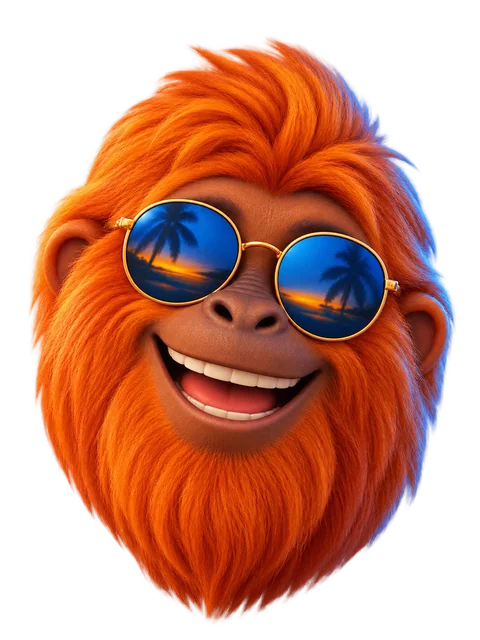

3 señales
de que tu página
necesita un
rediseño
La abres en el celular
y tienes que hacer zoom.
Tarda tanto en cargar
0%

z
z
z
que hasta tú te aburres.
Te da pena mandarle el link
¿Me mandas el link de tu página?
a un cliente.
¿Te pasó alguna?
Hablemos.
outstudio.online
Never the usual.